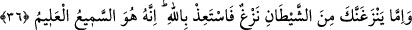
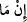
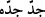
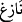

36. Eğer şeytandan gelen kötü bir düşünce seni dürtecek olursa, hemen Allah’a
sığın. Çünkü O, işiten, bilendir.
“Eğer” tavsiye edilen kötülüğü iyilikle savma hasletinden vesvese ile seni çevirmek
ve muhâlif bir duruma dâvet etmek üzere “şeytândan gelen kötü bir düşünce, seni
dürtecek olursa hemen” onun şerrinden “Allah’a sığın” ona itâat etme “Çünkü O,”
senin sığınmanı “işiten,” niyetini “bilendir.”
Burada (__WORD__)’nin aslı (__WORD__)’dır. (__WORD__) şartiyye olup (__WORD__) şart mânâsını teyid için ziyâde
edilmiştir. Bunun için tekid nûnu şart fiiline bitişmiştir. Zîrâ tekid edilmediği zaman
tekid nûnu şart fiiline bitişmez.
Şeytanın dürtmesi mânâsına gelen (__WORD__), (__WORD__) kelimesi gibidir. el-İrşad’da olduğu
gibi şeytanın vesvese vermesi buna teşbih edilmiştir. Çünkü o, şer ve uygunsuz işlere
tahrik etmek üzere gönderilmiştir. Burada şeytan dürtücü kabul edilmiştir. (__WORD__)
kabilinden fiilden fâil olacak bir sıfat oluşturulmuş ve şeytan (__WORD__) dürtücü sayılmıştır.
(__WORD__) harf-i cerri ibtidâiyyedir. Yani şeytandan kaynaklanan bir dürtü demektir. Yahud
burada şeytan masdarla vasıflanmış olup “dürtmek” anlamına gelen (__WORD__), (__WORD__)
“dürtücü” demek olmuş olur. (__WORD__) harfi cerri tecridiyyedir. Yani sanki şeytandan bir
başka şeytan daha çıkarılıp (__WORD__) dürtücü diye isimlendirilmiştir.
Mânâ şudur. Şâyet şeytan sana vesvese verir ve seni tavsiye edilen kötülüğü iyilikle
savma hasletinden çevirir ve bunun hilafına bir şeye çağırırsa şeytanın şerrinden hemen
Allah’a sığın ve şeytana itâat etme; zîrâ Allah senin sığınmanı işitir ve niyetini bilir.
Kötülüğe en güzel olan şeyle mukabele etme hasletini terk etmenin şeytanın dürtüsünün
bir eseri olduğunu anlatmakta, tam bir sakındırma ve şeytandan uzaklaştırma vardır.
et-Te’vîlâtü’n-Necmiyye’de şöyle der: Âyette ayrıca şuna da işâret edilmektedir ki
peygamber, yahut velî kul bile Allah’ın mekrinden ve azâbından emîn olmamalı; şeytanı
Allah’ın mekrinin bir sûreti olarak görmeli ve şeytanın dürtüklemesine karşı dikkatli
olup onun vesveselerinden Allah’a sığınmalıdır. Kişi şeytanın bu dürtülerinin kalbe
ulaşmasına fırsat vermemeli; evvel emirde hemen Allah’a dönmelidir. Zîrâ bu dürtüler
kalbe ilk düştüğünde kişi buna muhâlif davranmazsa artık bu durum bir düşünce hâlini
alır. Daha sonra şeytanın bu dâvet ve dürtüsüne bir meyil ve arzu oluşur. Sonra bu
durumu kontrol altına alamaz ve zelle meydana gelir. Kişi güzel bir dönüşle durumu
toparlayıp telafi etmezse kalpte bir katılık oluşur; bu şekilde uzayıp gittikçe de artık
tehlike beklenir. Kul şeytanın kaydırma ve dürtülerinden sadâkat ve samimiyetle
Allah’a sığınıp ondan yardım isteyerek ve ihlas ile kullukta bulunarak kurtulabilir. Allah
Teâlâ şöyle buyuruyor: “Benim hâlis kullarıma karşı senin bir gücün yoktur.” (el-
Hicr 15/42). İşte kul şeytandan kurtulma husûsunda Allah’tan alacağı takviye gücünü ne
kadar artırır, Allah’a yalvarıp ondan yardım istemekte ne kadar ihlaslı ve samimi